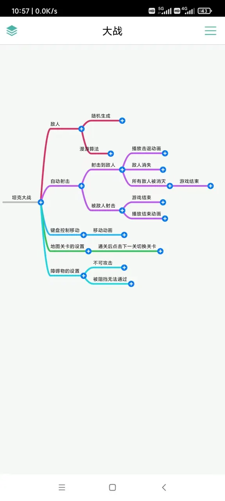
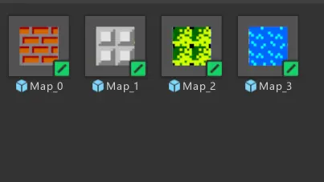
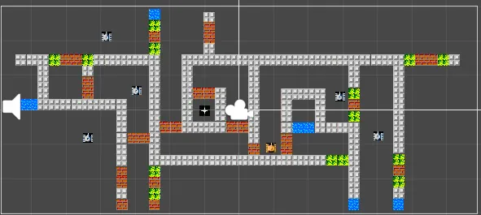
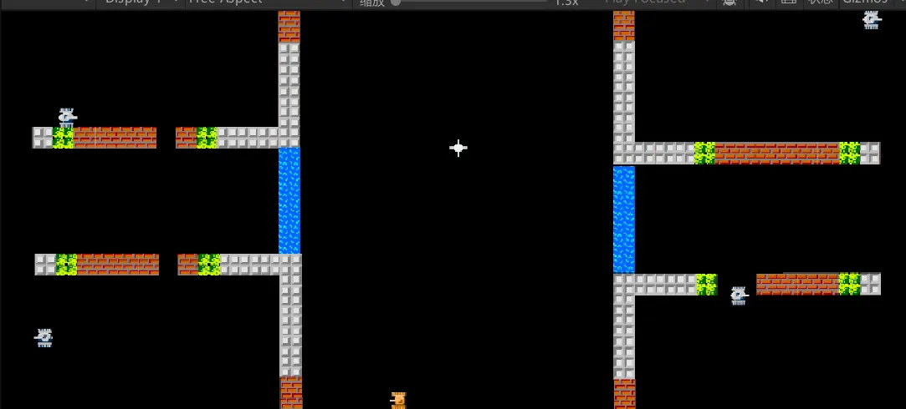
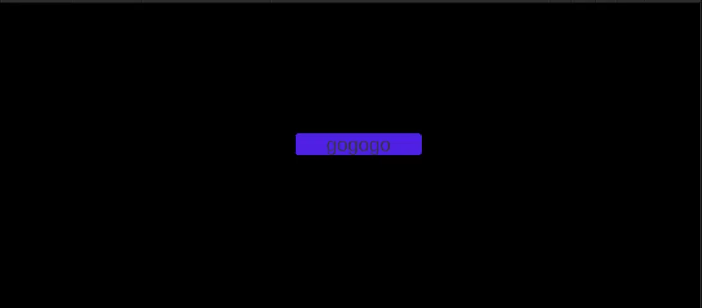

小组作业 · 坦克大战
策划 / 复刻 ← 返回作品集
思维导图

实现步骤
步骤 1 · 素材准备

先查找坦克大战需要的素材，比如坦克、地图、特效、背景音乐和音效等，并分给各个板块需要的人，制作二维游戏。
步骤 2 · 地图

用地图模版建造地图，给墙上的墙添加碰撞效果，使坦克不能过墙；把一些墙设置为可破坏，建造多个不同地图作为不同关卡。
步骤 3 · 坦克与战斗

给坦克添加碰撞效果，再用 C# 脚本添加移动、旋转、发射炮弹和音效。地图上固定出现 NPC 坦克，能发射炮弹、随机走动。炮弹打中坦克后触发死亡和爆炸特效。
步骤 4 · UI 与整合

用 UI 模板制作界面，点击按钮进入游戏，再把其它模版组合起来，添加背景音乐，最后检查细节。